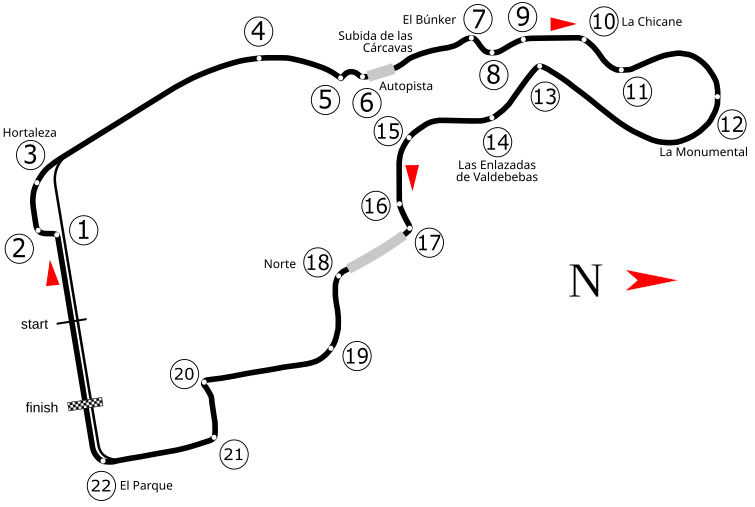

El circuito Madring
El Madring es el nuevo circuito de Fórmula 1 situado en Madrid y sede del Gran Premio de España desde 2026. Su trazado combina tramos de carretera pública con secciones construidas específicamente para la competición.
El circuito tiene una longitud de 5,414 kilómetros y cuenta con 22 curvas. Su diseño combina zonas rápidas, curvas técnicas y diferentes cambios de ritmo que ponen a prueba a los pilotos y a los monoplazas.
Una de las zonas más características es La Monumental, una curva peraltada de aproximadamente 550 metros de longitud y con una inclinación de hasta el 24 por ciento.

Madrid y la Fórmula 1
La relación entre Madrid y la Fórmula 1 no comienza con el Madring. El circuito de Jarama, situado al norte de la capital, acogió pruebas del Campeonato del Mundo entre 1968 y 1981.
En 2026, la Fórmula 1 regresó a Madrid con el nuevo Madring, dando comienzo a una nueva etapa para el Gran Premio de España en la capital.
Esta llegada permitió combinar la tradición del automovilismo en Madrid con un circuito moderno diseñado para las exigencias actuales de la Fórmula 1.
Características técnicas
- Longitud: 5,414 kilómetros
- Número de curvas: 22
- Vueltas en carrera: 57
- Distancia del Gran Premio: 308,399 kilómetros
- Curva destacada: La Monumental
- Peralte máximo de La Monumental: 24 %
Curvas y zonas destacadas
El trazado del Madring combina zonas rápidas con sectores más técnicos. A lo largo de la vuelta, los pilotos deben afrontar cambios de ritmo, fuertes frenadas y diferentes tipos de curvas.
- Sector inicial: una zona rápida que lleva hacia las primeras frenadas del circuito.
- Curva 8: una zona de fuerte frenada acompañada de un cambio de elevación y un vértice ciego.
- La Monumental: la curva 12 es una sección peraltada de aproximadamente 550 metros y hasta un 24 % de inclinación.
- Sector final: una parte más técnica que termina en la última curva antes de la recta de meta.